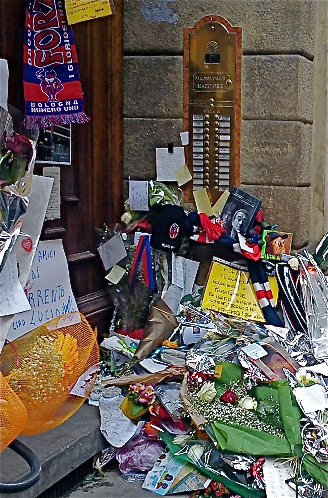

Quando passa Nuvolari. Sulla morte di Lucio Dalla e il sesso degli angeli

L’arte sghemba di Lucio Dalla. Il vizio di dichiarare gli altri. La cultura gay e l’ecumenismo. Il pinkwashing. Pensare il diverso: Byron, Weininger, Adorno, Lacan. Omoerotofobia ed eterofobia. Leggi e basso ventre. Sessualità fluida e polarità di genere. Nuovo patto di socialità. «La folla attende il suo arrivo».
Celebrare il proprio compleanno da morto, in una data resa famosa come titolo di una vicenda non autobiografica, riempire con circa 5.000 persone una piazza ribattezzata con un nome diverso, sono indizi decisivi per comprendere il rapporto sghembo che l’arte di Lucio Dalla intratteneva con la realtà. La sua canzone che preferisco è Nuvolari, scritta con il poeta Roberto Roversi. Intelaiata da un’orchestrazione di ingranaggi ben coordinati e pulsanti, impagabile quando sul crescendo arriva a fare «poltiglia» dei «cocci di bottiglia» di montaliana memoria, conduce i suoni delle parole e la pronuncia musicale a sfiorarsi, in un equilibrio inarrivabile e a mio avviso non più ripetuto in altre prove. In questo quattro marzo, dentro la basilica di San Petronio e sotto le telecamere, un’assemblea intera si produce in un unico spasmo alla parola «Grazie» pronunciata da Marco Alemanno, partner delle più recenti avventure artistiche di Dalla, tra cui un brano inequivocabilmente religioso come INRI.
Una nota stonata si dilata, fino a richiedere una risoluzione. Lucia Annunziata denuncia tanto l’omosessualità non dichiarata del musicista e cantante quanto l’ipocrisia della Chiesa nel celebrarne le esequie. La giornalista era da poco reduce da un’altra gaffe ampiamente evitabile che riguardava il mondo musicale, dove per difendere le pretese messianiche di Adriano Celentano al Festival di Sanremo era riuscita ad affermare la graditissima iperbole che lo avrebbe sostenuto pure se avesse detto che gli omosessuali sarebbero dovuti andare ai forni. Un violento attacco contro Dalla è stato quindi compiuto in nome di un’insospettabile integralismo da Aldo Busi, maligno come un tumore nel dare del «buffone» ad un uomo semplicemente più istrione di lui, nonché poco accorto nell’uso delle parole laddove ha diffuso addirittura come vera la falsa notizia che Dalla appartenesse all’Opus Dei.
Di fronte a tali goffaggini e isterismi, persino Giuliano Ferrara è riuscito a farci una figura egregia, ricordando che l’omosessualità non comporta necessariamente l’adesione alla cultura gay e ai suoi riti: insomma, per essere sintetici ed eleganti, nessuno è autorizzato a dichiarare il culo degli altri. Poi, consideriamo che se un matrimonio omosessuale potrebbe anche avere un senso, per quanto fino a pochi anni fa fosse osteggiato come reazionario dagli stessi interessati, un funerale gay resta piuttosto incomprensibile.
Dove gli esponenti della Chiesa, con cui il cantante intratteneva rapporti personali, hanno pacatamente svolto il compito di amministrare le esequie, le tristi aggressive polemiche per questo mancato coming-out sembrano manifestare spiccate tentazioni egemoni da parte del movimento gay. Se si parla spesso dell’omosessualità diffusa nella Chiesa, bisognerà anche notare la pretesa ecumenica dei gay nella comunicazione. Riconoscere la dignità delle persone omosessuali non risparmia dal segnalare in chi parla a nome dell’intera categoria la presunzione di imporre un proprio canone, come se la ragione della diversità del reale risiedesse esclusivamente nell’identità con se stessi.
In questo abuso del concetto di identità, l’omosessualità diventa un valore universale apparentemente infallibile, così “ecclesiastico” da configurarsi come una specie di “papato” dei nostri tempi, che coerentemente può anche associarsi a quel sistema usato da politici e stati per rifarsi la faccia noto come pinkwashing, praticato dall’Israele destrorso di Nethanyau così come da incolori amministrazioni italiote. Non è questo quanto serve ai diritti delle categorie meno protette e alla crescita sociale collettiva; piuttosto, sembra maggiormente riguardare quei pregiudizi che tendono a diffondersi indistintamente.
Bisognerà ricordare che la realtà non è in bianco e nero. E così, laddove esiste per ognuno un’unica e personale sessualità da coordinare con affetti e pulsioni, preferire lo stesso o il differente non cambia poi molto. Cercando per davvero di “pensare diverso”, Byron, che amava le donne come gli uomini, ci sorprende affermando che la Chiesa cattolica esprima appieno l’«ermafroditismo» di Roma. Invece, più di un secolo fa, Weininger ricordava che nelle persone le gradazioni tra i poli maschile e femminile sono tali da rendere la stessa contrapposizione omosessuale-eterosessuale insensata. Da parte sua, Adorno ci ammonisce sul fatto che il “femminile” medesimo è una costruzione omosessuale maschile, e che la famiglia rappresenta l’anello terminale del meccanismo con cui il sistema precisa i suoi condizionamenti, motivo per cui gusti personali e composizione del nucleo non ne cambiano ruoli e funzioni. Infine, Lacan ci ricorda che l’amore è sempre eterosessuale, laddove riguarda l’incontro tra diversità. Insomma, la libertà è un po’ più avanti, sempre, e va bene così.
E siamo poi tanto sicuri che questa società apparentemente così permissiva, ma che tende esclusivamente a creare nuove categorie di consumatori, sia libera dallo sfruttamento? Chi sfrutta chi oggi? E quali altre domande sarebbe opportuno porsi?
Lucio Dalla, estroso e riservato, si faceva gli affari suoi e per nessuno era un problema. Lo so pure io che si pomiciava i capelloni già negli anni Sessanta, mentre un’attitudine propriamente definibile come pederastia sembrava piuttosto marcata. I dettagli delle sue abitudini sessuali però non dovrebbero nemmeno interessarci, ed è peraltro evidente la presenza nella sua vita di amori eterosessuali, e colpisce la capacità della sua arte di tratteggiare figure femminili mai stucchevoli. E infatti, parlare d’amore nella lingua di tutti pertiene proprio agli angeli, sul cui sesso le chiacchiere umane invano si affaticano, e che magari, come ricorda la canzone, piscerebbero tranquilli tranquilli in testa a tutti.
Chi non è un angelo, alla diffusa pretesa di fare bandiera di una qualsiasi presunta “identità” di orientamento sessuale esclusivista, può opporre la realtà di una sessualità di corpi senzienti le cui possibilità sono oltre ogni steccato istituito e tutte le manipolazioni possibili, che oltrepassa i generi pur mantenendone polarità e attrazione. Infatti, riconoscere la legittimità dei rapporti tra congeneri non deve inibire la ricerca delle alterità di cui il sesso è naturalmente costituito, a meno che non si voglia menomare la persona dalle possibilità di incontro: qui lo stesso Freud, peraltro già in tempi non sospetti contrario ad ogni discriminazione contro gli omosessuali, può ancora aiutarci.
L’omofobia (più propriamente omoerotofobia - la parola omofobia significherebbe letteralmente “odiare il simile”, e non aiuta molto a comprendere) è una violenza: lo è però anche istigare (in forme più o meno larvate) all’omosessualità e allo stesso tempo renderla passibile di ricatto se non si osservano certe condizioni prescritte da precise associazioni di categoria. Ma soprattutto, e questo è decisivo, l’eterofobia non può e non deve costituire un criterio. Nel rispetto dei gusti personali, e pur considerando la sempre maggiore diffusione di incompletezze sessuali di ogni tipo, un mondo geneticamente indifferenziato non è auspicabile e nemmeno possibile: su questo, soccorre anche l’opinione di un indiscutibile assertore di diritti e laicità come Voltaire.
Non fare né misteri né parate in fatto di sesso è normale per molti. Ad ogni modo, per quanto le pulsioni conoscano soltanto esempi e rifuggano le norme, è innegabile che ogni concreta tipologia di rapporto tenda oggi ad assumere significati sociali. E così, la legislazione mondiale si sta coerentemente impegnando nel riconoscere le unioni civili di ogni tipo, le cui esigenze crescono con i cambiamenti e per le quali vanno considerati tanto i diritti individuali e la tutela del presente, quanto le successioni e gli assetti futuri. È questo il punto decisivo, alle cui domande spesso si sfugge per rifugiarsi in uno strano conformismo. Ma è anche legittimo chiedersi, laddove i rapporti tendono a svincolarsi dalla complementarietà tra generi e/o dall’aspetto riproduttivo, fino a che punto il diritto debba adeguarsi.
Mentre si attendono risposte, si può considerare che l’ossessione di legiferare su ogni cosa, tipica della nostra epoca, possa fermarsi anche prima del basso ventre. Preoccupazioni espresse soprattutto in ambito religioso, e non solo, impediscono ad alcune di queste unioni di essere definite come “matrimonio”: semplicemente, non sono costituite dala scelta di una madre per i propri figli. Inoltre, non essendo relazioni a base monogamica, potrebbe essere opportuno porle su un ordine legislativo specifico, sulla base di un nuovo patto di socialità, che valuti le reali esigenze delle nuove famiglie.
Stiamo vivendo cambiamenti enormi e serve accortezza per valutarne la portata. Saper distinguere, decidere con distacco e partecipazione, anche se la nostra influenza sulle cose sembra irrisoria, e i risultati del tutto imprevedibili, rappresentano le regole minime. Lucio Dalla avrebbe apprezzato amggiormente piuttosto di tanti spropositi.
Intanto, l’omaggio immenso di una piazza in ascolto, appena turbato dalla ressa all’ingresso vip, sembra aver dato a Bologna qualcosa di cui essere fiera. Il surrealismo raffinato e popolare di questa grande voce è tra le parti migliori della cultura nazionale. Tuttavia, tali constatazioni non permettono di trovare nulla in grado di sostenere il rilancio di una città che sa soltanto compiangere il proprio degrado, che sembra specchio di quello di un Paese intero.
Un «gesùbambino» viene seppellito, altri ne verranno. Il presente collassa su se stesso, ogni sguardo si rivolge al passato. In questo polverone, un piccolo miracolo può sempre accadere. In tempi in cui per un jazzista «incapace di fare cose normali» sembrava particolarmente faticoso imporsi, era inimmaginabile in questa piazza ribattezzata la commozione di questo strano compleanno. E come se davvero fosse Nuvolari, «la folla attende il suo arrivo, per ore ed ore.»
Fotografia: Claudio Comandini, “Omaggio alla soglia di Dalla” - Bologna 2012